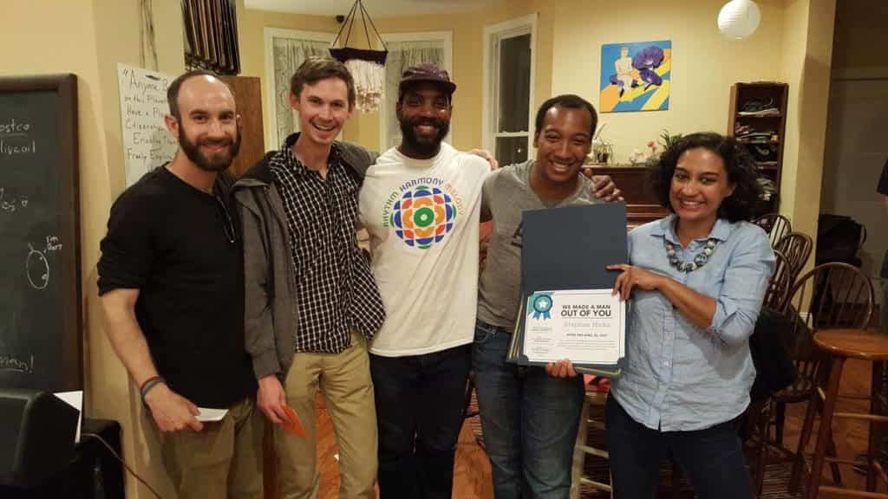

This account syndicates news from other media outlets.


For some time, Stephen Hicks had felt like something was off. “My relationship ended, then a lot of things started collapsing in front of me,” Hicks says. He began attending therapy, which made him realize that he needed to make a bigger change: “I wasn’t doing really terrible things, but I also wasn’t being the most ideal Stephen I could be,” he says. “The bar is really lowered for cisgender guys.”
So earlier this year, Hicks signed up for the pilot Rethink Masculinity class, a partnership between the Washington, D.C., Rape Crisis Center, Collective Action for Safe Spaces, and ReThink, an organization that works to prevent sexual assault.
The program bills itself as a class where men “learn how social constructs of masculinity harm them and the people around them, and work to construct healthier masculinities.” Or, as Hicks puts it, “It was eight weeks of guys discussing how they can address their actions with better self-awareness and less toxicity.”

“We spoke of emotional labor, consent, violence, communication, empathy, and vulnerability,” he adds, noting that the last subject, in particular, was a struggle for him: “[I was] trained and conditioned to be tough growing up.”
The Rethink program is the latest in a growing number of courses targeted toward people who identify as men, including the Men’s Project at the University of Wisconsin, Masculinity 101 at Brown, and the Duke Men’s Project at Duke. The goal, proponents say, is to help men examine their own biases and behaviors in order to cut down on misogyny and gender-based violence.
There’s no doubt that the problems these classes aim to tackle are pervasive ones — a reality that’s been made especially, painfully clear in recent days and weeks, as the Harvey Weinstein revelations have pushed discussions of sexual assault and harassment to the forefront. But can a class really be enough to chip away at something so deeply entrenched?
“It’s a promising approach,” says Eric Mankowski, associate chair of the psychology department at Portland State University and head of the school’s Gender and Violence Intervention Research Team, “but we don’t know whether they prevent sexual violence. Some studies show promising effects on attitudes and behavior intentions, but a single class is unlikely to undo years of socialization in toxic masculinity.”
For the past 25 years, Mankowski has taught a course titled Psychology of Men and Masculinities, which, he says, “deconstruct[s] how masculinity is socialized as a performative mask rather than a biological imperative.” He argues that the concept of “toxic masculinity” has four main components: suppression of anything stereotypically feminine; suppression of emotions related to vulnerability, like fear, sadness, or helplessness; male domination over women and other men; and aggression.
“From those four distal expectations come the proximal attitudes and behaviors, like ‘I deserve to have access to women’s bodies,’” he explains. “What we don’t know is if it’s more effective to address the distal or proximal ideas and behaviors.” Mankowski says alcohol abuse is a perfect example. “It numbs feelings and allows men to act aggressive. We can effectively address it, but we’re not addressing the underlying issue. It’s functioning to help them display their manhood, so why would they stop?”

“We’ve spent many years addressing survivors and victim behavior, but ethically, and in terms of efficacy, that’s incomplete,” he adds. “We have to address the roots.” And while course evaluations show that his students typically absorb what he teaches, Mankowski notes, that doesn’t necessarily mean that the class is making a real-world difference: “It may change beliefs about gender,” he says, “but does it change behavior?”
It’s not a given, but it’s not impossible, either. Research consistently shows that holding sexist attitudes is associated with gender violence, for example, so it’s not unreasonable to hope that better beliefs can lead to better behavior. Studies have also demonstrated that bystander intervention training — a subject covered in Rethink classes — can be effective at reducing the incidence of sexual assault.
On the other hand, though, these classes are taking on a lot. Trying to undo a lifetime’s worth of lessons about how to act at home, in the workplace, and in public — it’s a lofty goal, especially when so much of what participants encounter outside the classroom contradicts what they learn within it. And some of the desired outcomes — increased vulnerability, more emotional openness — are difficult to measure.
Don’t Miss: Men Will Always Be Seen As Evil By Feminists